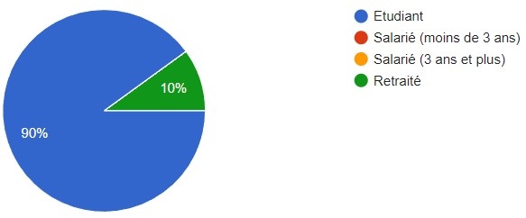
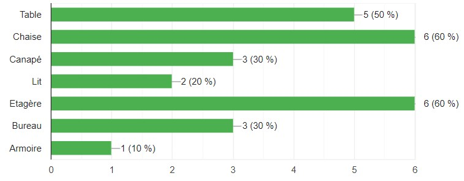
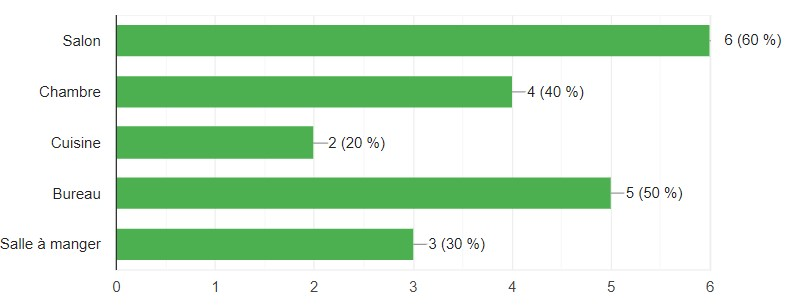
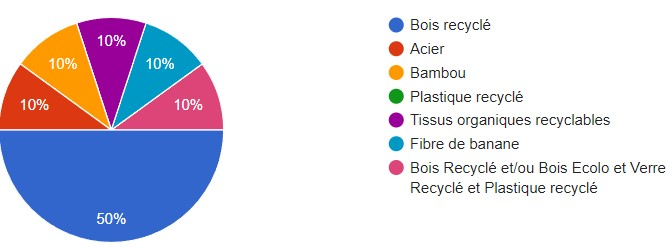
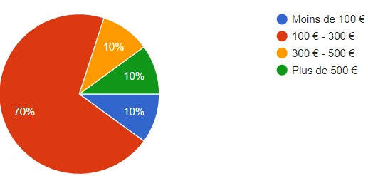
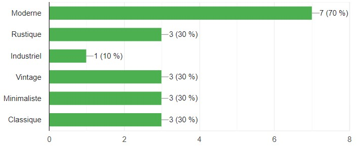
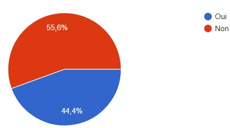
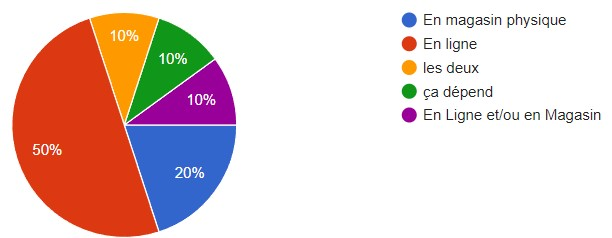

Cette question avait pour unique but de nous assurer de la situation des personnes répondant au questionnaire et cela nous a permis de nous en assurer
Grâce à cette question, on a pu orienter la direction de notre entreprise qui n'avait pas encore décidé de la production de meubles en particulier vers la production de chaises et d'étagères que nous envisagions déjà
Cette question complète la précédente pour déterminer la pièce à meubler qui intéresse le plus le client. Le salon et le bureau ont particulièrement été choisis et cela a orienté notre choix vers la production de chaises et de rangements qui sont 2 meubles particulièrement présents dans ces pièces correspondant ainsi à l'obersvation déjà établie dans la question précédente
Nous avions déjà décidé du matériau que nous allions utiliser pour la production de nos meubles, le bois recyclé qui est le matériau le plus facile à trouver mais nous devions nous assurer pour nous assurer de la satisfaction de la demande du client.
Cela nous a permis de déterminer le budget que nos potentiels acheteurs pourraient mettre dans l'achat de nos meuble
Cette question avait pour but de peaufiner les informations que nous avions déjà afin d'ajouter un style aux meubles choisis afin de correspondre au mieux au besoin du client tout en touchant le plus grand nombre d'acheteurs. Le style moderne a donc été choisi
Durant le processus créatif, nous avions pensé à des meubles modulables multitaches servant à diverses utilisations dans le cadre du faible budget des étudiants qui auraient pu y trouver une utilité. Malheureusement la clientèle ne semblait pas intéréssée par ces derniers et nous avons donc renoncé à l'idée de proposer de tels meubles.
Cette question avait pour but de fixer notre idée de vente uniquement ligne afin de minimiser nos dépenses internes. En effet, nous lançons tout juste l'entreprise et avons déjà établis contact avec des services professionalisés de livraison qui nous permettraient de livrer le client dans les meilleures conditions qu'il soit.
